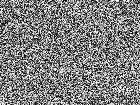

<!doctype html>
<html>
	<head>
		<meta charset="utf-8">
		<meta name="viewport" content="width=device-width, initial-scale=1.0, maximum-scale=1.0, user-scalable=no">

		<title>Analysis by Compression</title>

		<link rel="stylesheet" href="css/reveal.css">
		<link rel="stylesheet" href="css/theme/solarized.css">

		<!-- Theme used for syntax highlighting of code -->
		<link rel="stylesheet" href="lib/css/zenburn.css">

		<!-- Printing and PDF exports -->
		<script>
			var link = document.createElement( 'link' );
			link.rel = 'stylesheet';
			link.type = 'text/css';
			link.href = window.location.search.match( /print-pdf/gi ) ? 'css/print/pdf.css' : 'css/print/paper.css';
			document.getElementsByTagName( 'head' )[0].appendChild( link );
		</script>
	</head>
	<body>
		<div class="reveal">
			<div class="slides">
                <section data-markdown>
                    <script type="text/template">
                        # Analysis by Compression

                        [@ctford](https://twitter.com/ctford)/[ThoughtWorks](https://thoughtworks.com)

                        [David Meredith's Paper](http://www.titanmusic.com/papers/public/MeredithMEC2013ProceedingsPaper.pdf)

                        [Code examples](https://github.com/ctford/kolmogorov-music/blob/pwl/src/kolmogorov_music/talk.clj)
                    </script>
                </section>

                <section data-markdown>
                    <script type="text/template">
                      ## Kolmogorov complexity

                      > The Kolmogorov complexity of an object is a measure of the amount of intrinsic information in the object.

                      > It is the length of the shortest program that takes no input and computes the object as its output.
                    </script>
                </section>

                <section data-markdown>
                    <script type="text/template">
                      ## Kolmogorov complexity

                      > The more structural regularity there is in an object, the shorter its shortest possible description and the lower its Kolmogorov complexity.
                    </script>
                </section>

                <section data-markdown>
                    <script type="text/template">
                      ## Order vs chaos

                      
                      

                      <a href="http://creativecommons.org/licenses/by-sa/3.0/" title="Creative Commons Attribution-Share Alike 3.0">CC BY-SA 3.0</a>, <a href="https://commons.wikimedia.org/w/index.php?curid=321973">Mandelbrot set</a> by Wolfgang Beyer and <a href="https://commons.wikimedia.org/w/index.php?curid=24614072">White noise</a> by Jorge Stolfi.
                    </script>
                </section>

                <section data-markdown>
                    <script type="text/template">
                      ## Uncomputability

                      > Unfortunately, it is not generally possible to determine the Kolmogorov complexity of an object, as it is usually impossible to prove that any given description of the object is the shortest possible.
                    </script>
                </section>

                <section data-markdown>
                    <script type="text/template">
                      ## Hutter prize

                      * [Cash prize](http://prize.hutter1.net/) funded by Marcus Hutter.
                      * Awards €500 for each 1% improvement in compressing a dump of Wikipedia.
                      * The organizers believe that text compression and AI are equivalent problems.
                    </script>
                </section>

                <section data-markdown>
                    <script type="text/template">
                      ## Comparative quality

                      > The theory of Kolmogorov complexity supports the idea that the shorter the description of a given object, the more structural regularity that description captures.
                    </script>
                </section>

                <section data-markdown>
                    <script type="text/template">
                      ## Analysis by Compression

                      
                      

                      J. S. Bach’s Prelude in  C  minor
                    </script>
                </section>

                <section data-markdown>
                    <script type="text/template">
                      ## Analysis by Compression

                      Raw:
                      ```
                      P(p( 1,27), p( 2,26), p( 3,27), p( 4,28),
                        p( 5,26), p( 6,25), p( 7,26), p( 8,27),
                        p( 9,25), p(10,24), p(11,25), p(12,26))
                      ```

                      As transpositions:
                      ```
                      T(P(p( 1,27), p( 2,26), p( 3,27), p( 4,28)),
                        V(v( 4,-1), v( 8,-2)))
                      ```

                      `T(P(·),V(·))` denotes the union of the point set, `P(·)`, and the point sets that result by translating `P(·)` by the vectors in `V(·)`, where `v(x,y)` denotes a vector.

                    </script>
                </section>

                <section data-markdown>
                    <script type="text/template">
                      ## Musical learning as compression

                      * Understand a piece is to compressing it against "largely implicit understanding of all the previous music he or she has encountered."
                      * You can only listen to a song for the first time once.
                      * Implies that "the way that an individual understands a given piece depends not only on which pieces he or she already knows, but also on the order in which these pieces were encountered."
                    </script>
                </section>

                <section data-markdown>
                    <script type="text/template">
                      ## Generating analyses

                      * The SIATEC algorithm takes a set of points and automatically discovers all the translationally equivalent occurrences.
                      * SIATEC outputs a collection of such occurrence sets, called translational equivalence classes or TECs.
                      * SIATECCompress runs SIATEC on a dataset, then sorts the found TECs into decreasing order of “quality”.
                    </script>
                </section>

                <section data-markdown>
                    <script type="text/template">
                      ## Critique #1: geometry
                      * What about dynamics?
                      * What about timbre?
                      * What about voice?
                      * What about regularity besides geometric translation?
                    </script>
                </section>

                <section data-markdown>
                    <script type="text/template">
                      ## Critique #2: formalism
                      * What about lyrics?
                      * What about culture?
                      * What about context?
                      * What about feedback?
                    </script>
                </section>

                <section data-markdown>
                    <script type="text/template">
                      ## Summary of contributions

                      * Complexity theory as a tool for musicology.
                      * Compression as fundamental to musical understanding.
                      * Automatic analysis generation.
                    </script>
                </section>
			</div>
		</div>

		<script src="lib/js/head.min.js"></script>
		<script src="js/reveal.js"></script>

		<script>
			// More info https://github.com/hakimel/reveal.js#configuration
			Reveal.initialize({
				history: true,

				// More info https://github.com/hakimel/reveal.js#dependencies
				dependencies: [
					{ src: 'plugin/markdown/marked.js' },
					{ src: 'plugin/markdown/markdown.js' },
					{ src: 'plugin/notes/notes.js', async: true },
					{ src: 'plugin/highlight/highlight.js', async: true, callback: function() { hljs.initHighlightingOnLoad(); } }
				]
			});
		</script>
	</body>
</html>
